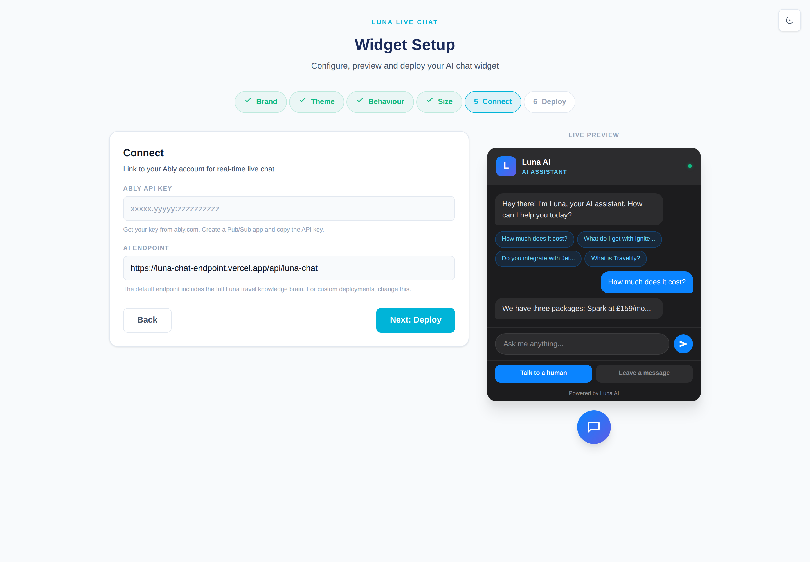
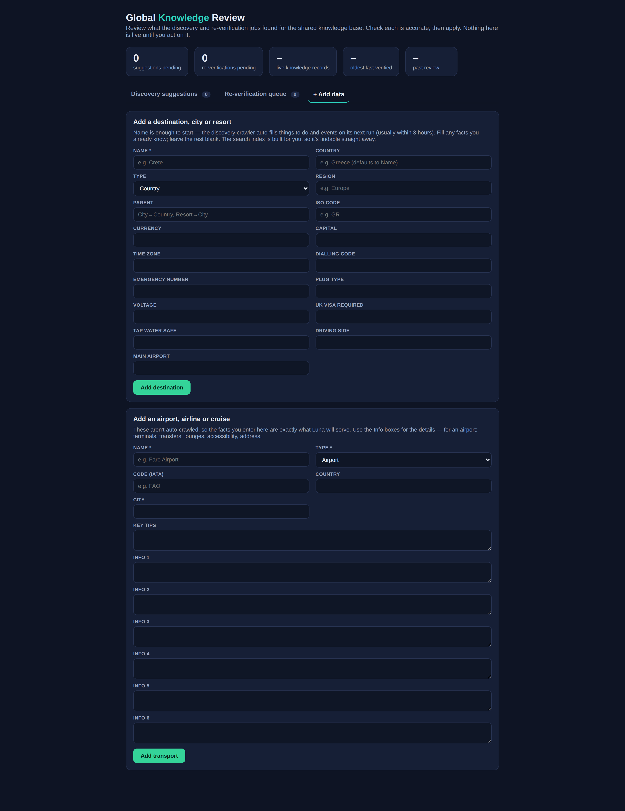

The internal playbook for provisioning, launching and operating Luna for clients — from creating a client to running the knowledge pipeline and keeping it all green.
Internal — Travelgenix team
Provision · deploy · operate · troubleshoot
Audience: Travelgenix staff
Contents
Architecture overviewThe moving parts and where each one lives
Onboarding a new clientThe admin‑gated Add New Client flow
Widget setup & deploy (staff side)Connect and Deploy steps; the embed snippet
Environment variablesEvery key, grouped by feature
File sharing setupConnecting the Vercel Blob store
WhatsApp provisioningProviders, webhook, number mapping
The knowledge pipeline & reviewGlobal brain, crons, the review dashboard
Monitoring & healthThe heartbeat and stats endpoints
Luna is an AI live‑chat widget for travel businesses, branded Travelgenix. A visitor opens the chat bubble on a client's site, talks to Luna (the AI), and the conversation appears live in that client's agent dashboard. Luna answers from a shared travel knowledge base until it escalates or a human takes over. The same inbox also receives WhatsApp.
The pieces (and where each lives)
Piece
What it is
Vercel projectluna-chat-endpoint
The whole product — serverless functions under /api/* and static pages under /public/*. Production: luna-chat-endpoint.vercel.app (also served on chat.travelify.io).
Airtable — Global brain
appPKx77relfeiqmq. Shared knowledge powering every client: Knowledge, Destinations, Transport (searched live, no status filter), plus staging/audit tables.
Airtable — Per‑client CRM
app6Ot3eOb3DangkB. The client roster and conversations: Clients, per‑client Knowledge, Conversations, Messages.
Ably (realtime)
Carries live messages between widget, server and dashboard. Each client uses their own Ably key.
Anthropic API
Generates Luna's replies (api/luna-chat.js) and the copilot.
Vercel Blob
Stores chat file/image attachments at stable public URLs (api/upload.js).
WhatsApp providers
Pluggable under lib/providers/ (Gupshup default, 360dialog alternative).
Supabase pgvector
Optional semantic search (project Luna Agents). Off by default.
Tip. The single admin review hub for the shared knowledge base is …/global-brain.html, gated by the admin password.
Warning. The global brain is read live with no status filter. Anything written into Knowledge/Destinations/Transport is immediately visible to every client's Luna. Treat direct edits as going straight to production.
Two hosts, one project.luna-chat-endpoint.vercel.app (onboard/setup/dashboard URLs, AI endpoint) and chat.travelify.io (WhatsApp webhook, monitor alerts) both point at the same Vercel project.
2Onboarding a new client
Onboarding happens at /onboard.html, behind the Admin Access password screen (checked against ADMIN_PASSWORD). New clients are written to the CRM base.
ONBOARD The Add New Client form. Everything except the fields shown is generated automatically.
Steps
Open /onboard.html, enter the admin password, then Continue.
Review the Existing Clients list — each shows name, slug and a status chip. View reopens that client's dashboard URL and embed code to re‑share.
Complete every field in Add New Client (see table), then Create Client.
On success, copy the three boxes: Dashboard URL, Widget Embed Code and Login Credentials, and share them securely.
Field
What it is / where to get it
Client Name
The client's company name (e.g. Sunshine Travel). The canonical identity — embedded in the dashboard URL and the widget's data-clientName; login and stats match on it. Saved as ClientName.
Client Slug
Read‑only, auto‑generated (lowercase, hyphenated). Used for namespacing (e.g. Blob paths). Saved as ClientSlug.
Contact Email
The client's contact address. Saved as ContactEmail.
Dashboard Password
Auto‑generated; what the client types to log in. Saved as DashboardPassword.
Ably API Key
The client's own key (xxxxx.yyyyy:zzzzzzzzzz). They create an account at ably.com, make a Pub/Sub app and copy the API key. Each client needs their own so conversations stay private. Required.
Deep Link Site ID
The Travelgenix site ID for holiday‑search deep links (e.g. 250). Enables the in‑chat booking search. Saved as DeepLinkSiteID. Optional.
Tip. If the client doesn't yet have an Ably key, send them the Ably Setup Guide first — you can't create the client without it.
Warning. The generated Dashboard URL can contain the Ably key and password in the query string. Share it over a secure channel, never in a public ticket.
Warning.ADMIN_PASSWORD has an in‑code fallback if unset — make sure it's actually set in Vercel.
3Widget setup & deploy (staff side)
The visual configurator at /setup.html is a six‑step wizard (Brand · Theme · Behaviour · Size · Connect · Deploy) with a live preview. Steps 1–4 are cosmetic; staff care most about Connect and Deploy.

STEP 5 Connect
STEP 6 Deploy
Step 5 — Connect
Ably API Key — paste the client's key (xxxxx.yyyyy:zzzzzzzzzz). Becomes data-ablyKey on the embed and powers live handover. Without it the widget runs AI‑only with no live inbox.
AI Endpoint — defaults to …/api/luna-chat, which includes the full Luna travel knowledge brain. Only change it for a custom deployment (maps to data-endpoint).
Step 6 — Deploy
The wizard renders a single‑line embed snippet that only includes data-* attributes differing from defaults.
Click Copy.
Give the client the snippet to paste just before </body> (install methods for Duda, WordPress, Shopify, Wix and plain HTML are listed in the wizard).
Tip. The onboarding success panel's embed code is the minimal version (just data-clientName + data-ablyKey). Use setup.html when the client wants custom branding, colours, hints or window size.
Warning.data-clientName must exactly match the Client Name in Airtable (watch for trailing spaces / casing), or login, stats and conversation attribution won't resolve.
Warning. "Deploy" here means giving the client a snippet for their own site. It does not redeploy Vercel — that happens automatically on merge to main.
4Environment variables
All env vars live on the luna-chat-endpoint Vercel project. Grouped by feature.
Core chat / realtime / admin
Var
Req?
What it does
ANTHROPIC_API_KEY
Yes
Anthropic key for Luna's replies and copilot.
AIRTABLE_KEY
Yes
Airtable PAT used by almost every endpoint.
AIRTABLE_PAT
Copilot
Alias used by the copilot endpoint.
ABLY_ROOT_KEY
Yes
Server‑side Ably root key for publishing / token signing.
ADMIN_PASSWORD
Yes
Gates /onboard.html and /global-brain.html. Set it explicitly.
Warning. If BLOB_READ_WRITE_TOKEN is not set, every upload returns 503 "File uploads are not configured" and the attach button shows a friendly message — nothing else breaks. 503s on attach = Blob store not connected.
Warning. The Blob store is public‑read by design. URLs are unguessable but not access‑controlled — don't use chat file sharing for anything that must stay private.
6WhatsApp provisioning
WhatsApp brings a client's own number into the same inbox as the web widget — multi‑tenant, each client attributed to their own number. Inbound: api/whatsapp-webhook.js; outbound: api/whatsapp-send.js; provider logic under lib/providers/, selected by WHATSAPP_PROVIDER.
Provider choice
Provider
When
Cost shape
gupshup (default)
Demo / initial setup
No fixed fee; pay‑as‑you‑go (~$0.001/msg + Meta).
360dialog
Scale / clean exit
~£500–1,000/mo partner fee + ~€25/number. Easiest migration to direct Meta.
Start on Gupshup (cheapest to stand up). Switching later is a change to WHATSAPP_PROVIDER plus the number map — the orchestration code is unchanged.
GET on that URL is the verification handshake. The token is verified fail‑closed.
Per‑client number mapping
WHATSAPP_NUMBER_MAP is JSON mapping each number/app to a client record id (recXXXX).
Gupshup — keyed by app name: {"LunaDemoApp":{"clientId":"rec…","phone":"447700900000"}}, plus GUPSHUP_API_KEY.
360dialog — keyed by phone_number_id: {"111222333":{"clientId":"rec…","apiKey":"D360-…"}}.
Conversation id is deterministic: wa_<businessNumber>_<customerNumber>. The same Ably channels carry it, so the dashboard shows it with a WhatsApp badge and no special handling.
Going live (Gupshup demo)
Create a Gupshup account → a WhatsApp app (sandbox to test instantly, or a real number).
Copy the API key → GUPSHUP_API_KEY. Note the app name and source number.
Set WHATSAPP_PROVIDER=gupshup, WHATSAPP_VERIFY_TOKEN, WHATSAPP_NUMBER_MAP.
In Gupshup, set the inbound/callback URL to the webhook URL above.
Message the number — the chat should appear in the inbox; Luna replies on the phone; an agent reply reaches the phone.
Tip. Set up Upstash. Without it, provider retries aren't de‑duplicated and Luna loses multi‑turn memory (each message answered statelessly).
Warning — 24‑hour window. Free‑form replies are only allowed within 24h of the customer's last message. Outside it you need approved templates, which are not wired up here.
Warning. Use real rec… ids and keep WHATSAPP_NUMBER_MAP valid JSON. A bad map means inbound messages can't be attributed and won't appear.
7The knowledge pipeline & review
The pipeline keeps the global brain fresh and accurate, with a strong human‑review gate for anything a model produced.
Prime directives (never break)
Zero hallucination. Facts come only from trusted/fetched sources, never the model's memory. Anything that can't be grounded is flagged, never invented. Fail safe — an ambiguous reply becomes "unverifiable", never a false confirm.
Voice: UK English, no em‑dashes, no Oxford commas, plain and warm.
FCDO guardrail: Luna never voices a safety assessment; the server attaches the official FCDO status as a card.
Auto‑publish policy: deterministic connector data (Ticketmaster/Foursquare, no LLM) auto‑publishes to live Knowledge; anything a model extracted stays human‑gated.
The review dashboard — /global-brain.html
Admin‑gated. One page, three tabs (each with a count badge): Discovery suggestions (approve/dismiss scraped suggestions), Re‑verification queue (apply/dismiss re‑checked or gap‑filled facts), and + Add data (add a destination or an airport/airline/cruise; the Search Index builds on save). Per‑client review: /luna-brain.html?client=<name>.

GLOBAL BRAIN The + Add data tab. Add a destination (name is enough — discovery auto‑fills the rest) or a transport record (what you type is what Luna serves).
Crons (from vercel.json)
Cron
Schedule
Purpose
/api/monitor
*/15 * * * *
Heartbeat (checks A/B/C).
/api/reverify-structured
0 2 * * *
Re‑check structured Destination/Transport fields via corroboration.
/api/fill-gaps
0 3 * * *
Extract blank structured fields from sources; stage as Pending (never auto‑applies).
Sent by api/review-digest.js at 06:00 to REVIEW_DIGEST_TO, linking the global‑brain page. Sends every day including an "all clear" unless DIGEST_SKIP_WHEN_EMPTY=1. ?dryRun=1 previews JSON; ?force=1 forces a send.
Turning on semantic search
Create a Voyage key → VOYAGE_API_KEY.
Copy the Supabase service_role key → SUPABASE_SERVICE_KEY; set SUPABASE_URL.
Run /api/embed-index?secret=<CRON_SECRET> once (or wait for the 09:00 cron).
Set SEMANTIC_SEARCH=1. Unset it to flip off instantly.
Tip. Retrieval runs keyword + semantic in parallel and merges. Any error or missing config silently falls back to keyword search, so semantic search can't break a reply.
Warning. Approving items writes to live Knowledge. Only approve grounded, sourced facts — never bypass the human gate for model‑extracted content.
8Monitoring & health
Heartbeat — api/monitor.js
Runs every 15 minutes (cron‑only; manual with ?secret=<CRON_SECRET>). Three checks in parallel:
Check A — Visitor path: POSTs /api/ably-token like a widget. Catches a stuck rate limiter or dead signing key.
Check B — Dashboard path: authenticates Travelgenix's dashboard Ably key. Catches a revoked/dead key.
Check C — AI path: a tiny real Anthropic call against each distinct model Luna uses. Catches a retired/renamed model id, a bad key or an outage.
Alerts fire only after two consecutive failures (~15 min real outage): one "down" Telegram, silence, then one "recovered". Strike‑state lives in Upstash. Returns 200 when healthy, 503 when not.
Tip. Test alert wiring without an outage: GET /api/monitor?secret=<CRON_SECRET>&test=alert.
Stats — api/luna-stats.js
Powers the dashboard Stats panel. GET with X-Client-Name (or ?client=). Computes totals, AI‑only vs escalated split, avg duration/messages, visitor CSAT with distribution, last‑14‑days counts, peak hour, top pages and top topics.
9Go‑live checklist (staff)
Run through this per client before declaring them live.
Client created in /onboard.html (appears in Existing Clients; all fields populated).
Ably connected — client's own key saved and present in the embed (data-ablyKey).
Widget deployed on the client's site (snippet before </body>; data-clientName matches Airtable exactly; bubble loads, Luna responds).
Login works — client signs in; a live test chat appears; agent reply reaches the widget.